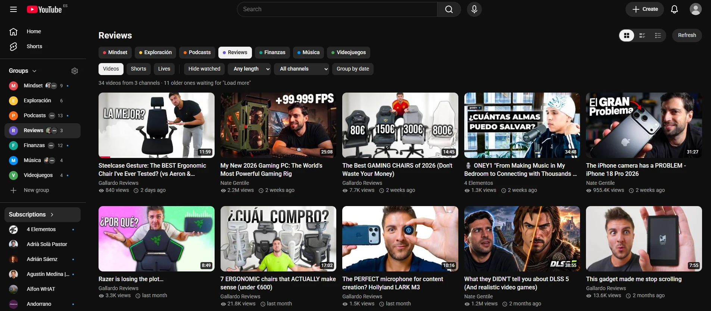
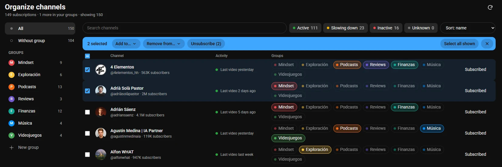
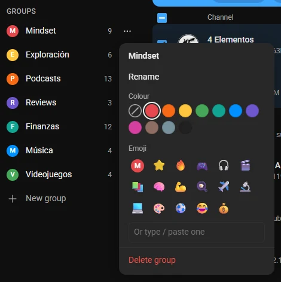
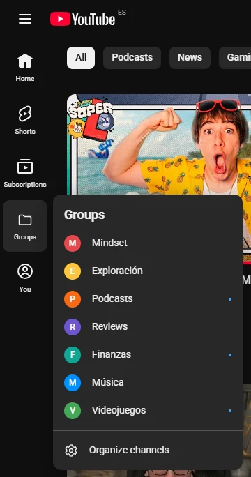
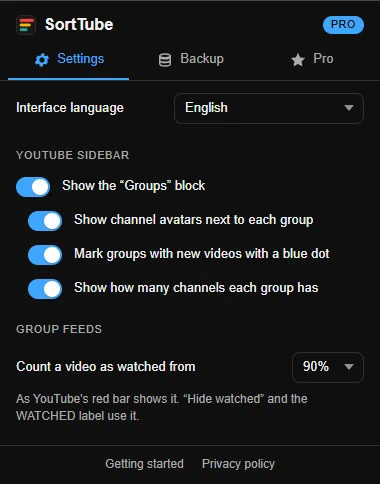

Your YouTube subscriptions, finally sorted
SortTube puts your channels into groups — News, Music, Learning… — and gives each group its own feed, right inside YouTube.
Free · Works in Chrome, Edge and Brave · No account, no tracking

Features
Everything you follow, in order
YouTube's Subscriptions feed mixes everything. SortTube lets you choose what to watch, and when.
Groups in the sidebar
Your groups sit right above Subscriptions, with a blue dot when there's something new.
A feed for every group
Only those channels, newest first. Videos, Shorts, live streams and premieres, each with its label.
Sort in minutes
All your subscriptions in one list: one click puts a channel in a group. Select many at once to go faster.
Clean up
An activity light shows which channels have gone quiet, and you can unsubscribe from several at once.
Real video previewPRO
Hover a thumbnail and watch the actual video, with sound, volume and a time bar.
Your progress, from YouTube
Red progress bars and “watched” marks straight from your YouTube history. Hide what you've seen.
Organizer
Hundreds of channels? A few minutes.
Every subscription in one place, ready to sort.
- One click adds a channel to a group, another click removes it.
- Select several (Shift for a range) and add them all, or unsubscribe in one go.
- Traffic light: active, slowing down or inactive, to know what to drop.
- Drag channels onto a group, and groups to reorder them.

Groups
Make each group yours
Rename it, give it a colour or an emoji, and spot it at a glance.
- Rename a group right where it is.
- Colours and emoji so every group stands out.PRO
- Drag groups into the order you like.

Sidebar
Your groups, always at hand
Right above Subscriptions in YouTube's sidebar, and one hover away when the sidebar is narrow.
- A blue dot marks the groups with new videos.
- With the narrow sidebar, hover “Groups” to open them.
- Fold the block, or jump to the organizer in one click.

Your way
Settings that stay out of your way
The extension button opens a small settings panel: language, what the sidebar shows, when a video counts as watched, backups and Pro.
- 15 languages, and video titles as YouTube shows them in yours.
- Backups of your groups in a small file you keep.
- Works with YouTube's light and dark themes, and with the narrow sidebar.

Privacy
No servers. No tracking.
Pricing
Free to start. Pro when you want more.
Free
Forever
- Up to 5 groups
- Groups in YouTube's sidebar
- A feed for every group
- Videos, Shorts, live streams and premieres
- The organizer and the activity light
- Watch later, queue and progress bars
- Backups
Pro yearly 2 months free
That's 1,66 € a month, billed once a year. VAT included.
- Everything in Free
- Unlimited groups
- Real video preview on hover
- Filters: hide watched, length, channel, group by date
- Group colours and emojis
- Drag channels between groups
Pro monthly
Billed every month. Cancel anytime. VAT included.
- Everything in Free
- Unlimited groups
- Real video preview on hover
- Filters: hide watched, length, channel, group by date
- Group colours and emojis
- Drag channels between groups
Install SortTube first: the license key you receive by email goes in its settings.
Frequently asked questions
Is SortTube free?
Yes. The free version has everything you need to sort and watch up to 5 groups. Pro is optional.
Do I have to give you my Google account?
No. SortTube uses YouTube in your own browser, the same session you already have. It never sees your password and has no servers of its own.
Which browsers does it work in?
Chrome and the browsers that install extensions from the Chrome Web Store: Edge, Brave, Opera, Vivaldi…
How do I activate Pro?
After buying, you get a license key by email. Open SortTube's settings (its button in the toolbar) → Pro → enter the key.
How do I cancel Pro?
From the link in your purchase email, whenever you want. Pro stays on until the end of the period you paid for, and your groups are kept.
Will I lose my groups if I uninstall it?
Download a backup first (SortTube's settings → Backup) and import it later. With Chrome sync on, they also come back on your other computers.
Is SortTube made by YouTube?
No. SortTube is an independent extension, not affiliated with YouTube or Google.